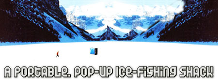
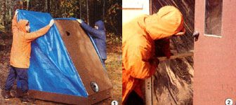
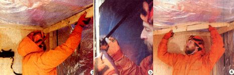
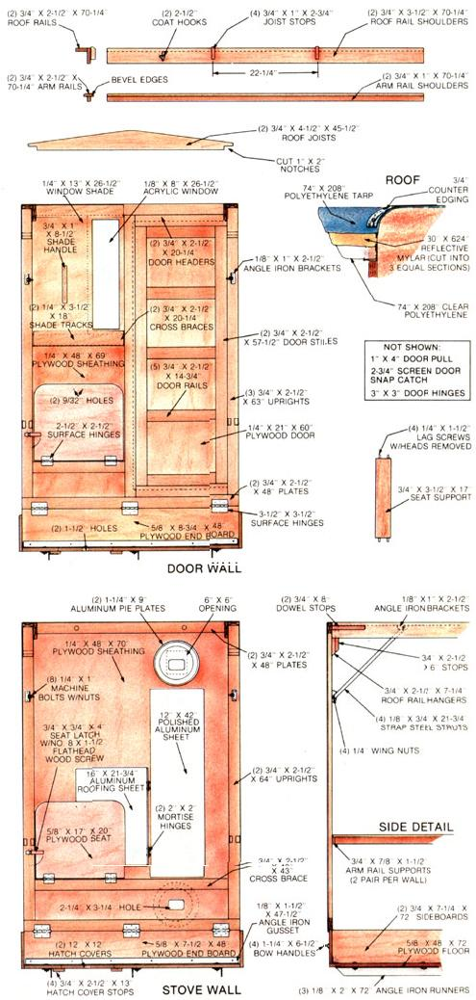
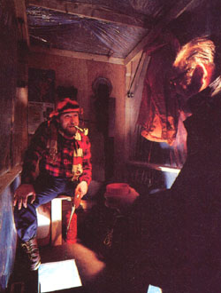

When the frozen lakes call you to fish, this handy heated shelter will rise to the occasion .
Northern anglers can enjoy a special brand of sport fishing that those in warmer climates can't experience close to home. The lure of a frozen lake's wintry solitude draws untold people away from their hearths and onto the solid surfaces of countless bodies of water across the land . . . to participate in the popular pastime of ice fishing.
Now, the old regulars know that being comfortable while hunkering over a hole in the ice is tantamount to being successful, simply because an alert angler is less likely to miss a strike. It follows, then, that a completely enclosed, weathertight structure equipped with a convenient and safe form of heat would make for more successful outings than would the open-faced windbreaks that many fisherfolk pit against winter's cruelty.
With that in mind, our research staffers set their sights on designing and building the best ice-fishing shelter imaginable without going overboard on materials costs . . . and until it was completed they didn't realize that they'd incidentally created an excellent pop-up camper, hunting shack, playhouse, and emergency shelter!
Let's look at some of the benefits of this utilitarian design. To begin, at 4' wide, 6' long, and nearly 6-1/2' tall, the structure is spacious enough to comfortably accommodate even two large adults for the eight- or tenhour stints expected of it. Yet in three minutes' time it can be folded up into a 9"-high, 4' X 8' self-contained package that can be pulled along the ice on built-in runners, or lifted into the back of a pickup truck.
Inside, the shelter sports two sizable folddown seats, removable floor hatch covers, armrests, coat hooks, and a window with a sliding shade. Furthermore, it's designed to incorporate a homebuilt kerosene heaterfully detailed on page 108 of this issue-that's inexpensive, compact enough to fold up with the shelter, and capable of keeping the chill off on the coldest of days. (It draws combustion air from the outside to minimize the risks of oxygen depletion.) Finally, the hut's polyethylene tarp skin (which allows the shack to fold and reduces its weight and expense) is lined with a reflective plastic which helps insulate the shelter and retain interior warmth.
A look at the accompanying illustrations will reveal that the structure is, in the main, made of 1/4" and 5/8" plywood sheathing (AB or AC grade), 1 X 3 and 1 X 4 furring strips, a couple of 4'-long 1 X 5s, 1/8" metal stock, and hinges and other assorted hardware.
To aid in your understanding of how the project goes together, we've prepared separate detail drawings of the two end walls and the roof components. Essentially, the shelter is just a tray on runners; the stove-equipped wall is designed to hinge down on top of the tray, with the window-and-door wall folding to cover it. The structural members that hold the walls steady and give the roof shape fit easily into the tray once the framework is dismantled, and the flexible side walls and roof fold neatly between the two end walls.
We won't try to explain every facet of construction, since the illustrations are quite thorough in that regard. But there are a few areas in which you'd likely appreciate additional help, and we'll take these one at a time.
To start, it's simplest to build the base first, complete with angle iron runners (miter their ends), hatch covers and stops, and end boards with handles. Be true to the dimensions on the end boards, since the geometry of the folding walls depends upon them. Don't install the two sideboards yet, because they have to cover the tarp layers, which are added later.
Next, assemble the window-and-door wall according to our plan. Again, pay attention to the dimensions given, and be especially careful around the door opening, since there must be a good seal at that point. For a really top-notch job, use carpenter's glue as well as 3/4" brick siding nails to secure the furring strips to the 1/4" plywood sheathing. The acrylic window is merely joined to the edges of its opening with silicone sealant, and the sliding plywood shade fits behind two narrow plywood tracks mounted to the cross braces. Finally, be sure to allow a 3/4" clearance above the roof rail hangers and the stops attached to them . . . and don't forget the stops, because they'll help keep the wall off the poly in transport.
The stove wall is assembled in much the same manner as its opposite, but its construction is even more critical because it must fit snugly beneath its mate. Pay close attention to the position and length of the dowel stops, which keep the weight of the wall off the stove when the shelter is folded. To assure a safe and proper installation, don't cut the openings in the sheathing for the stove inlet and flue until you've read the stove construction article carefully and your heater is assembled. Too, note that the openings in the pie plates are just slightly larger than the rectangular downspout elbows . . . and that the bottom of the inside plate faces inward, while the inside of the outside, or inlet, plate faces outward. For safety's sake, mount the two-layer reflective aluminum shield behind the stove housing, as described on page 108, and fabricate the folding heat shield as shown. Even though you'll be in the shelter when the heater's running, and thus able to keep an eye on it, these extra precautions provide a necessary margin of safety.
With both walls completed, you can concentrate on mounting them to their respective end boards using the larger surface hinges. Once that's done, assemble the arm rails and roof rails as illustrated, paying particular attention to the placement of the joist stops and the angle iron brackets. Don't fasten the arm rail supports or the wall brackets until you've trial-fitted the rail sets to see where the steel struts and the arm rail shoulders will fall. Then drill the holes and install the bolts that hold the metal parts together. (The wall bracket bolts are fixed in place with locking nuts tightened against their shoulders.) The two roof joists should have a symmetrical pitch cut into their upper surfaces, and 1" X 2" notches included in their lower corners.
At this point, the structural portion of the shelter is complete. To finish the project, you'll need to install the three layers of plastic sheeting as follows: First, drape the clear poly inner liner over the erected structure so the material is slightly loose and all the wall edges are covered. Staple the plastic at appropriate locations to hold it in place, then trim it if necessary, leaving a bit of border for fold-over. Next, cut your roll of reflective film into three 30" X 208" sections, and lay them over the poly so they overlap at the inside edges and meet the walls. Finally, place the outer layer of reinforced tarpaulin over the film, and fold over the edges and bottom to create a hem. Again, use some staples to hold it temporarily in place.
The last step is to secure the layers of plastic to the edges of the walls with carefully trimmed counter edging held in place with 3/4" ovalhead screws. These molding strips should be fastened at the top and sides, terminating about 3" from the lower ends of the walls. When this is done, the two sideboards can be installed . .. and your shelter is complete.
Without a doubt, you'll be the envy of the lake the minute you unfold your shelter and start your heater cooking. Though we didn't have the opportunity to test the but in subzero weather, we feel confident that it's capable of maintaining at least a subsistence-level interior temperature in even severe cold, and will probably be more than adequate under more moderate conditions.
Finally, one word of caution: Before you set up your shelter on the ice, make absolutely certain that the frozen surface is thick and solid enough to support the 245-pound shed-plus you and a friend. And be sure to check your state's licensing requirements before boring your hole. That could save you from a fine . . . and from a very bad day. Happy angling!
|
 |
 |
 |
|
 |
 |
|